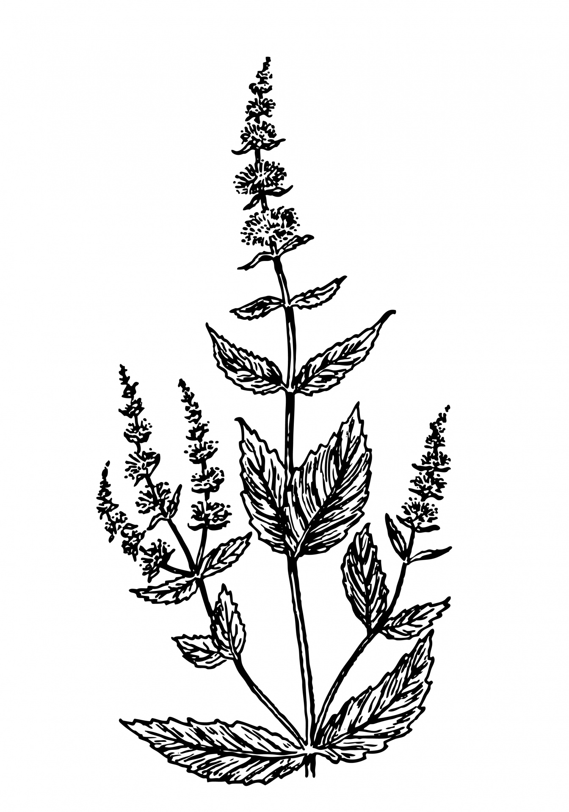

Chapter 4 Solo surveys

Distributed ecological networks often use surveys done by individuals or small-teams to compile data on species or communities. Transects and quadrats are typically used to structure these ‘walk-through’ surveys to estimate abundances and distributions of focal species. In this experiment, plants are examined.
Learning outcomes
- Appreciate the complexity of plant communities.
- Collect a dataset.
- Connect principles of experimental design to implementation.
- Write clear and reusable meta-data.
- Contribute to open science by publishing data and meta-data.
Steps
- Select a location that has at least 50m of space to walk a straight line unimpeded. This can be a forest, lot, disturbed area, grassland, or even a parking lot with enough cracks and permeable spots for plants to grow.
- Run out a piece of string, rope, or just measure 1m and line it up visually for a total length of 50m.
- Every meter, place a 0.5m quadrat or 0.5 by 0.5m square (string, ruler, cardboard, pvc pipe, measured piece of bamboo) on the ground.
- Record the total number of different plant species present (i.e. species richness).
- Estimate the total cover of all plants within the quadrat from 0 to 100% cover.
Data
Here is a sample datasheet for the pilot experiment. This is set up as plot-level observations, i.e. each row is replicate plot, one for each meter sampled on the 50m transect or line. This datasheet is structured very coarsely to estimate the total number of plant species and total cover of vegetation within the plots.
Meta-data
Describe how you collected the data. Ensure that each attribute in the dataset has a brief description. This is like an abbreviated version of the methods section in peer-reviewed science publications.
Deeper dive
If you choose this adventure, your goal is to experiment with the method of measuring plant communities. Innovate on the pilot experiment design and add more depth to your quantitative description of the plant community. These innovations can include deeper insights into the structure of the community (height of plants, density of all plants, or spatial patterns) or the composition (i.e. species identity, abundance per species per plot, flowering or not, native or invasive, or by plant functional groups). The predictions should be logical and reasonable outcomes if the hypothesis is a good approximation of how the system works, i.e. the key variables that make it work. Predictions should be testable and read like simple sentences that describe results. The goal of the deeper-dive experiment is to take your pilot experiment, examine what worked and did not work so well in your experiment, and do a deeper and more thorough job of testing a key idea that you are interested in associated with biodiversity patterns locally. The goal should be to explore one key factor that can be used to describe or predict plant community structure or composition for the specific habitat sampled.